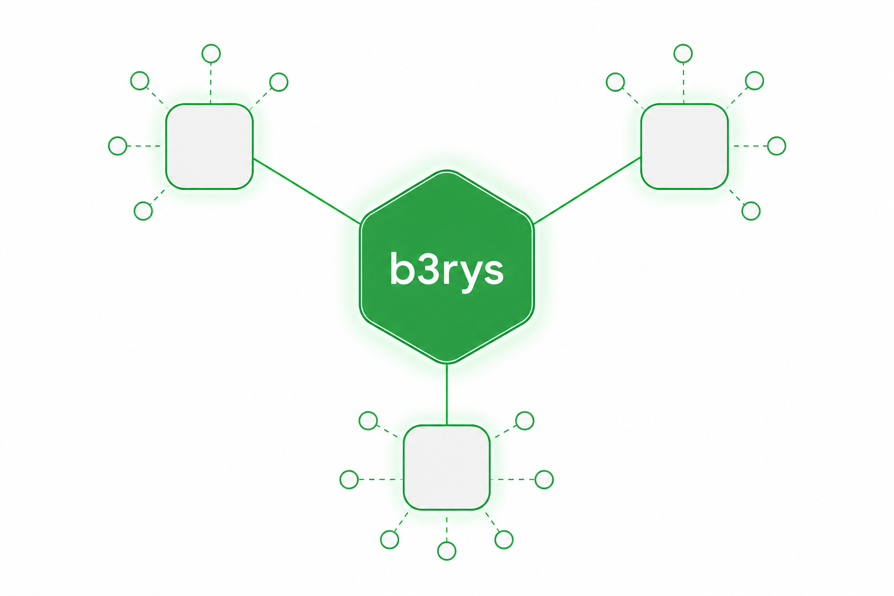

Claude Channel · OpenClaw · Hermes — 여러 runtime을 조율하는 팀 운영 레이어
GD 팀장의 문제 해결과 프로젝트 수행을 전문적으로 돕는다. b3rys는 특정 runtime(실행 환경) 하나가 아니라, 여러 runtime을 하나의 팀으로 묶는 운영 레이어(operating layer)다.
Kraken gives agents a room. b3os gives them an operating doctrine.

하나의 실행 환경이 아니라, 여러 runtime을 한 팀으로 조율하는 운영 레이어. 각 팀원이 역할 관점을 내고 서로 검토해 최선의 결과를 만든다.
각 카드는 해당 가이드 페이지로 연결된다. 운영체계 → 워크플로우 → 제품 → 팀·스킬 → 용어집.
@멘션 > 답장 > sticky > inference
계획→배정→실행→검증→보고→학습
Community→Starter→Team→Business
Claude · OpenClaw · Hermes 런타임
핵심 용어 한곳에
Main Mission — GD 팀장의 문제 해결과 프로젝트 수행을 전문적으로 돕는다. b3os 유료 가치는 모델 성능이 아니라 신뢰·운영·감사다.